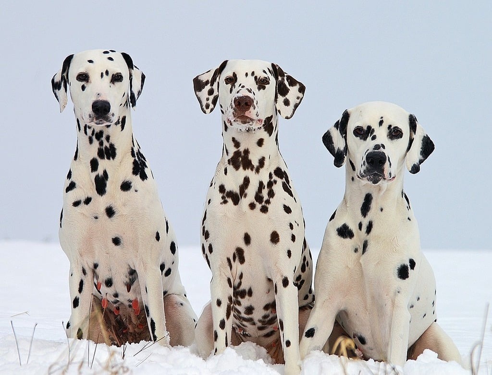

Consider Adopting a Pet
When considering purchasing a pet, you should adopt because it not only benefits the animal, but also you.
- You are saving a life. Many animals that are in shelters have been given up, abandoned, or lost. They are helpless and unwanted, needing a second chance of life. You can provide them with this life in a loving and safe home.
- Combating pet overpopulation. Each year 8 to 12 million dogs and cats are euthanized because there are not enough homes for them. Adopting from a shelter helps reduce the overpopulation cycle.
- Adopting an adult animal. Not all the animals in shelters are adults, but there are some and they come with great advantages. Being already grown you can see their personalities; you already know what you get. Many of them are also housetrained and can understand commands such as “sit” and “high-five”.
- Supporting charity and the community. When adopting a pet from a shelter, you are supporting a non-profit organization. This is beneficial because shelters mandate that adopted animals be spayed or neutered, reducing the chances of unwanted animals.
- You are paying less. Purebred puppies or kittens are sold for profit, but adoption shelters do not do this, they have low adoption fees.
- Spreading awareness. Your adoption can encourage others to do the same when meeting your wonderful pet 1.

Where Can I Adopt Pets?
With more pets than ever, Petfinder is in urgent need of adopters. They suggest adoptable pets and profiles of local rescues and shelters based on your location, as well as giving you the option to foster animals. They also provide their users with information about animal welfare in the community and how to make a difference in the lives of in animals need 2.
To search for your furry friend, click this Petfinder link: Petfinder